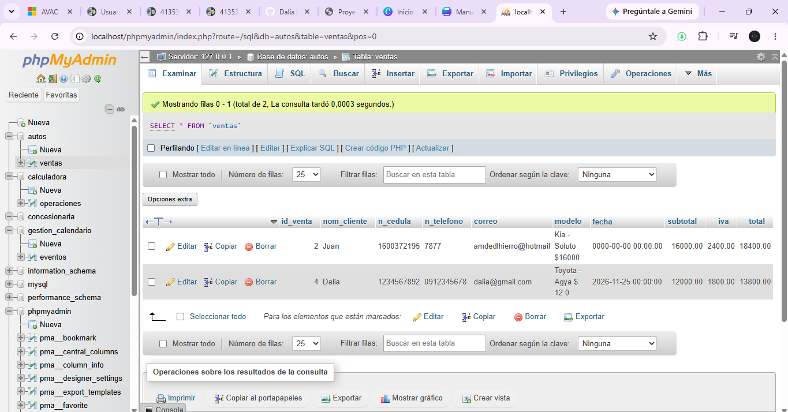
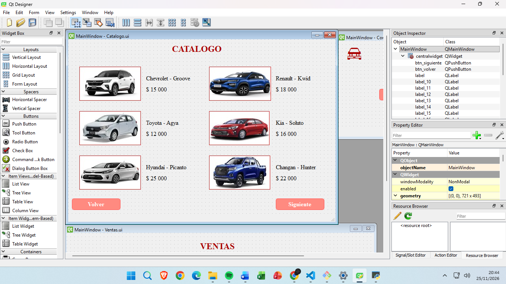
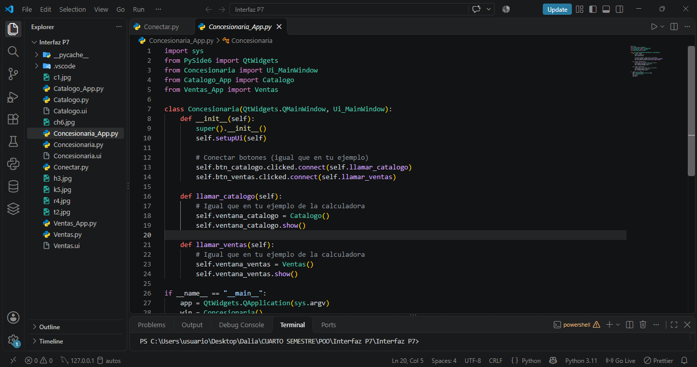
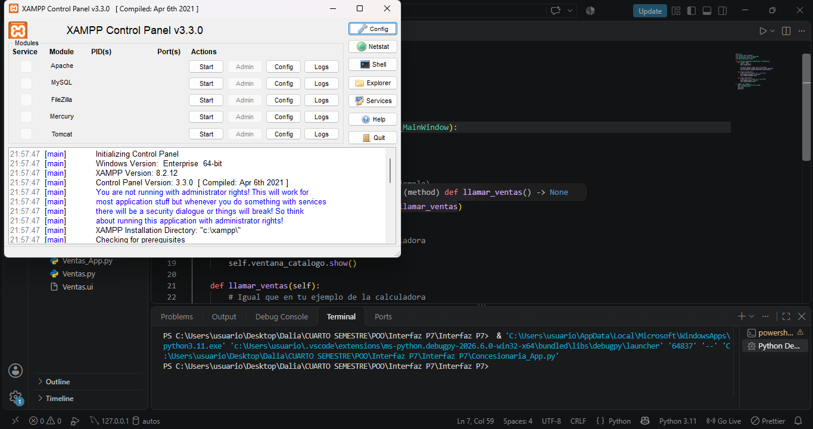

Proyecto de POO: Concesionaria de Autos
Publicado el por Dalia
Este proyecto es un sistema de gestión de ventas para una concesionaria de vehículos. Fue desarrollado utilizando el paradigma de Programación Orientada a Objetos (POO) con Python y la librería PySide6, lo que permitió crear un código modular, reutilizable y fácil de mantener. La interfaz gráfica se diseñó con Qt Designer, generando ventanas independientes para la bienvenida, el catálogo y el registro de ventas.
La arquitectura del sistema está dividida por clases. Por un lado, se manejan las ventanas (como Concesionaria, Catalogo y Ventas) y, por otro, la lógica de conexión a la base de datos. La navegación entre las ventanas se logra mediante la conexión de eventos (señales y slots) de PySide6, permitiendo al usuario moverse de forma fluida entre el menú principal, el catálogo de autos y el formulario de compra.
En el módulo de ventas se ingresan los datos del cliente (cédula, teléfono, correo), se selecciona el modelo del vehículo y el sistema calcula automáticamente el subtotal, el IVA y el total a pagar. Una vez confirmada la compra, los datos se envían mediante consultas SQL a una base de datos MySQL local, gestionada a través de XAMPP. De esta forma, cada transacción queda registrada permanentemente en phpMyAdmin, garantizando la persistencia de la información.
Video demostrativo
Capturas del proyecto




Características principales
- Diseño de interfaces gráficas amigables con Qt Designer.
- Programación Orientada a Objetos (clases, herencia y encapsulamiento).
- Cálculo automatizado de subtotales, IVA y total a pagar.
- Gestión y almacenamiento de datos en MySQL a través de XAMPP.
«La programación orientada a objetos nos permite construir sistemas ordenados, reutilizables y fáciles de mantener.»
- Dalia Rojas